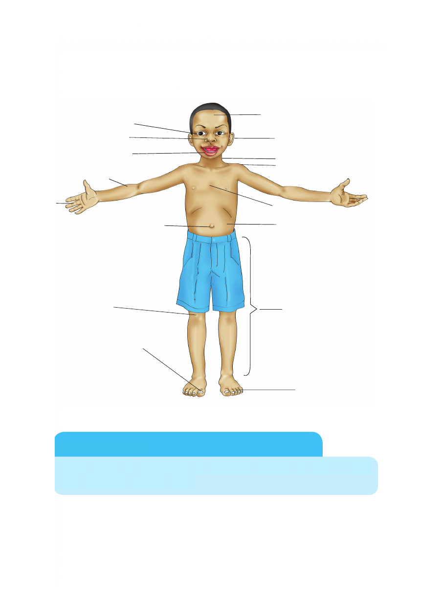

Sehemu za nje za mwili wa binadamu
Angalia picha hii, kisha jibu swali.
Taja sehemu za nje za mwili wa binadamu
Kazi ya kufanya
Chora mwili wa binadamu na uoneshe sehemu za nje za mwili
kwa kuandika majina yake
Sehemu za nje za mwili wa binadamu Angalia picha hii, kisha jibu swali. Taja sehemu za nje za mwili wa binadamu Kazi ya kufanya Chora mwili wa binadamu na uoneshe sehemu za nje za mwili kwa kuandika majina yake